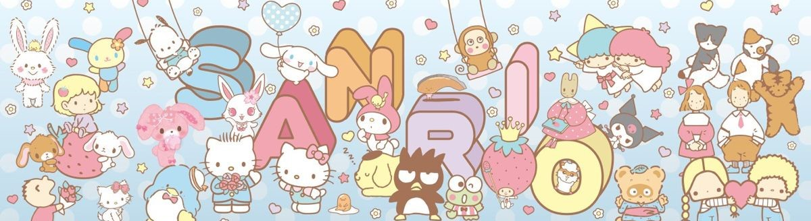
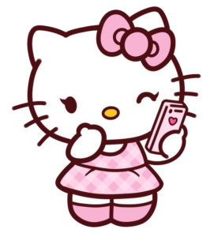

Welcome to the World of Sanrio
Step into a world filled with cuteness, joy, and friendship! Sanrio is a magical place where adorable characters bring smiles to people of all ages. Whether you're a lifelong fan or just discovering the charm of Sanrio, there’s always something delightful waiting for you!
Sanrio was founded in 1960 with a simple yet heartfelt mission—to spread happiness through cute and lovable designs. Over the years, it has introduced hundreds of unique characters, each with its own story, personality, and special charm. From the ever-iconic Hello Kitty to the mischievous Kuromi, there’s a Sanrio friend for everyone!
The Magic of Sanrio
What makes Sanrio so special? It’s not just about the cute faces—it’s about friendship, kindness, and spreading love. Sanrio characters remind us to be sweet, cheerful, and to always have fun! Their world is filled with lovable friendships, warm adventures, and a sprinkle of magic in everything they do.
But the fun doesn’t stop with the characters! Sanrio has brought its magic to life through adorable merchandise, dreamy theme parks like Sanrio Puroland, cute animated shows, and even fun collaborations with brands all over the world. Whether it’s plushies, stationery, fashion, or home decor, Sanrio adds a little joy to everyday life!
Experience the World of Sanrio
- A Cute Beginning – Sanrio started with a simple idea: to make the world brighter with small gifts and big smiles.
- The Magic of Friendship – Sanrio isn’t just about cuteness—it’s about kindness, friendship, and spreading joy wherever you go!
- Adorable Adventures – Whether it’s exploring Sanrio theme parks, watching animated shows, or reading character stories, there’s always a new adventure to enjoy.
- Bringing Joy to Fans – Whether through merchandise, events, or special collaborations, Sanrio continues to make the world a cuter place!
Explore the Cuteness!
Are you ready to meet your favorite Sanrio friends? Hop over to the characters page to discover more about Hello Kitty, My Melody, Cinnamoroll, and so many more adorable friends! Each one has their own little world filled with happiness and fun!
